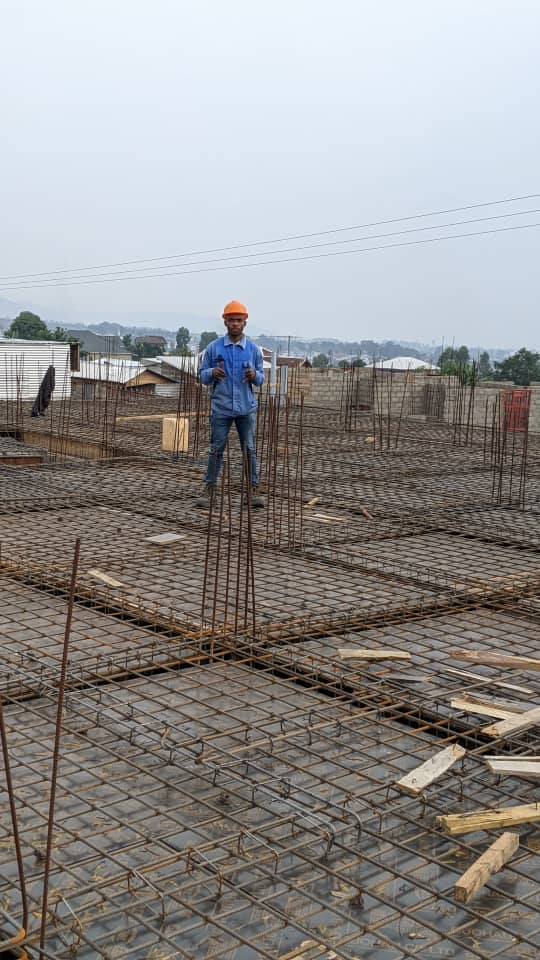
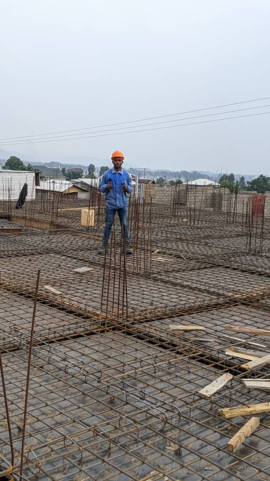

Je suis un ingénieur en génie électrique et informatique, passionné par le développement
de solutions durables pour l’Afrique. Mon objectif est d'utiliser mes compétences pour
créer un impact social et technologique positif, en particulier dans des régions comme
la République Démocratique du Congo (RDC), mon pays d'origine. Je crois que la technologie
peut transformer des communautés en apportant des solutions efficaces aux défis locaux.
En participant à des événements tels que le hackathon A2SV, j'ai collaboré avec d'autres
talents africains pour développer des projets innovants, tout en renforçant mes compétences
techniques. Mon engagement se manifeste aussi à travers des initiatives comme l’Initiative
de Pisciculture Durable, qui vise à former les jeunes et promouvoir des pratiques agricoles
durables. Mon ambition est d'utiliser la technologie et l'innovation pour contribuer au
développement et à la paix en Afrique..
Je suis un ingénieur en génie électrique et informatique passionné par le développement de solutions durables pour l'Afrique. Mon objectif est d'utiliser mes compétences pour générer un impact social et technologique positif. J'ai travaillé sur des projets visant à assister les orphelins, à concevoir une lampe à incandescence, ainsi qu'à réaliser des installations électriques domestiques. Ces initiatives reflètent mon engagement à améliorer les conditions de vie grâce à l'innovation et à l'ingénierie, tout en mettant l'accent sur le bien-être des communautés locales.

 
